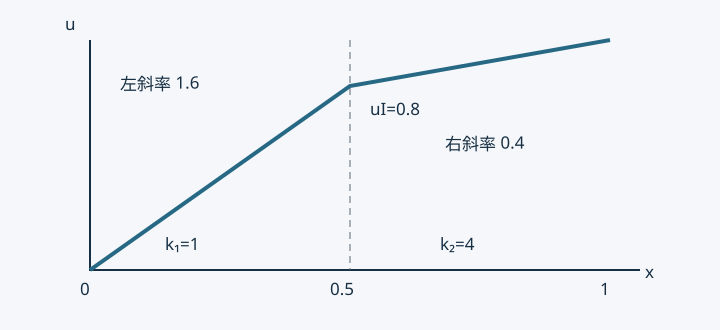

10 · 材料界面：连续的温度与可能跳变的梯度#
课堂依据：照片 C08、C09 的分区域积分、相反法向与界面通量抵消。下面的双层材料例题、非理想接触说明和有限元实现解释为编写者补充。
一条曲线为什么成为“内部边界”#
此前将导热率 k 当作一个给定函数。两种材料接触时，它在界面两侧可能跳变。将区域写为 Ω1∪Ω2，共同界面为 ΓI，两侧常系数为 k1,k2>0。温度在各自内部满足
−∇⋅(kr∇ur)=fr,r=1,2.
ur 是同一温度场在子区域上的限制，fr 是该侧体热源。若界面理想接触、没有面热源，模型还需
u1=u2及k1∂n1u1+k2∂n2u2=0在 ΓI.
这里 nr 是子区域的外法向；同一界面上 n2=−n1。前一式是温度连续，后一式表示流出第一种材料的热流正好流入第二种材料。它不是两个法向导数数值直接相等。
逐区域分部积分，界面项去哪了#
取在外部 Dirichlet 边界为零、跨界面连续的检验函数 v∈H1。每个子区域分部积分：
∫Ωrkr∇ur⋅∇vdA−∫∂Ωrkr∂nrurvds=∫ΩrfrvdA.
把两个式子相加。两条子区域边界都包含 ΓI，但法向相反；因检验函数在两侧有同一个迹，界面部分为
−∫ΓI(k1∂n1u1+k2∂n2u2)vds=0.
剩下的就是外边界贡献。若外边界分为 ΓD,ΓN,ΓR，在非 Dirichlet 部分规定 k∂nu+αu=g，其中 Neumann 部分 α=0，得到
r=1∑2∫Ωrkr∇u⋅∇vdA+∫ΓRαuvds=r=1∑2∫ΩrfrvdA+∫ΓN∪ΓRgvds.
这是课堂照片里界面括号为零的原因。不能只因“它在内部”便删掉界面项：用到了理想接触、无面源、守恒通量和连续检验函数这些条件。
双层材料的解析例题#
单位截面积杆长 1，界面 a=1/2，无体源。取 k1=1,k2=4，端温 u(0)=0,u(1)=1，坐标与物性用相容单位。数学通量 p=ku′ 在两侧相同。两段温差分别为 pa/k1 与 p(1−a)/k2，总和为 1，因此
p=a/k1+(1−a)/k21=58.
于是
u(x)=⎩⎨⎧58x,54+52(x−1/2),0≤x≤1/2,1/2≤x≤1.
界面温度是 4/5，左斜率 8/5、右斜率 2/5，相差四倍；乘导热率后均为 8/5。物理沿 +x 热流为 qx=−8/5，表示热从右端向左流。

图的拐点是材料引起的物理解，不是绘图误差。若错误强迫两侧斜率相同，就不能同时满足这两个导热率下的通量平衡。
有限元如何处理界面#
网格边与材料界面对齐、跨界面共享温度节点时，连续形函数自然表达温度连续。各单元按自己的材料系数积分，再装配；弱形式把通量平衡以积分意义纳入节点方程。一般离散通量不在每个边点都严格连续，不能把弱平衡说成逐点完全守恒。
上面一维例子只需两个线性单元，长度各 1/2，刚度分别为 2 与 8 乘标准 2×2 扩散块。界面自由行是 (2+8)uI=2u0+8u2，得到 uI=0.8，两侧线性恢复恰为解析解。实验脚本检查两侧通量相等。
若网格单元跨越材料界面，则不能不加说明地将跳变系数用任意平均替代。需分区积分、界面对齐网格或适当的界面方法；方法选择取决于几何和误差目标。
适用边界：界面有源或接触热阻#
上述连续温度适用于理想接触。若界面有接触热阻，可允许温度跳跃并建立“热流与温差成正比”的界面定律；若有面热源，则两侧外向热流之和不再为零。它们需要新的模型与试探空间处理，不能直接套用本章抵消结论。
自测：把 k1,k2 交换后，界面温度是多少？答案为 0.2，热通量大小仍为 1.6。在两侧相同系数时，拐点应消失。至此，现有课堂材料中的标量扩散、单元插值、装配与界面主线闭合；更多方向列于复习与预习。